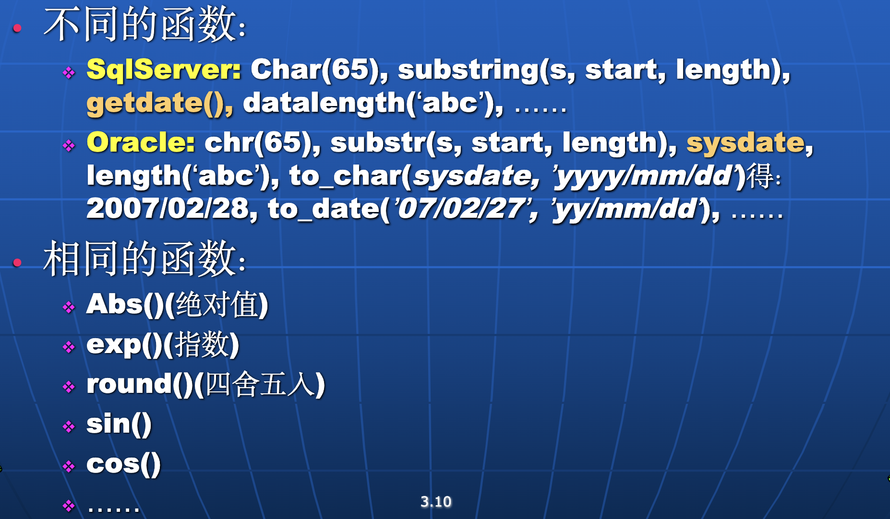

SQL
Data Definition
Create Table
CREATE TABLE instructor (
ID char(5), // char(5) 表示 5 个字符
name varchar(20) not null,
dept_name varchar(20), // 变长字符串，最大长度 20
salary numeric(8,2), // 8位，2位小数
primary key (ID),
check (salary >= 0)
);
指定属性名、属性类型、限制条件等，还可指定主键、外键等
- super-key
- candidate key
- primary key
Other Domain Types
- real // 浮点数
- data // 2025-3-4
- time // 11:27:00
- Timestamp // data + time
此外 sql 还包含一系列类型转换函数 
删除
增删属性
alter table instructor add birthday date; // 默认为 null
alter table instructor drop column birthday; // 可能不支持
ALTER TABLE instructor MODIFY (ID char(10), salary not null); // 修改属性类型
创建索引
CREATE INDEX <i-name> ON <table-name> (<attribute-list>);
// 可以给一个或多个属性创建索引，提高查询速度
create unique index ID on instructor(ID);
// 创建唯一索引
- DROP INDEX 删除
Data Manipulation
SELECT
起到 \(\Pi_{a1, a2..}(\sigma_P(R1 \times R2 \times ...))\) 的作用，select 的返回结果也是一个 relation- names 不区分大小写
其他用法
- (DISTINCT|ALL) // 去重，默认为 ALL
- 当有多个 attribute 时，整个元祖相同才算重复
- '*' 表示所有属性
- attribute-list 可以包含表达式，如+-*/
- 还可以包含函数等操作，对结果进行处理，如
- 字符串拼接：select 'attr=' || a1 from ...
- upper(), lower()
- strlen, substr 等功能
- Aggregate Function
- count, sum, avg, max, min
- Agg Fun 之外的属性必须出现在 group by 中
- 如果要对 Agg Fun 的结果进行筛选，需要用 having
- 还可以包含函数等操作，对结果进行处理，如
- order by 排序，默认升序，降序用 name desc
WHERE
- 可用逻辑运算符：AND, OR, NOT, BETWEEN..AND
- 实现自然链接：WHERE R1.ID = R2.ID
- LIKE 实现模糊匹配
- % 匹配任意字符串
- _ 匹配任意字符
别名
- 可用 AS 关键字，AS 可以省略：SELECT name AS instructor_name FROM instructor;
- 某些：new_name = column
- 可以给 column 和 relation 起别名
- 可以使引用更简洁
- 表内相互比较时，用于区分
Set Operation
默认去重，后加 ALL 可以不去重
- UNION // 并集
- INTERSECT // 交集
- EXCEPT // 差集
Summary
SELECT <[DISTINCT] c1,c2,…> FROM <r1,…>
[WHERE <condition>]
[GROUP BY <c1,c2,…> [HAVING <cond2>] ]
ORDER BY <c1[DESC][,c2[DESC|ASC],…]>
- GROUP BY子句应该在HAVING子句之前
- 执行顺序：From → where → group (aggregate) → having → select → order by
因此 where 后的条件先于 having 后的条件进行筛选 - 当出现嵌套时，在同一SQL语句内，除非外层查询的元组变量引入内层查询，否则内层查询只进行一次。
Null
- 任何涉及 null 的算术表达式都为 null
- 在 where 中，null 为 false
- 比较运算符：IS NULL, IS NOT NULL
- Aggregate Function，除了 count(*)，通常忽略 null
全称量词和存在量词
exists
EXISTS 针对 relation，而 NULL 针对属性的值
unique
用于判断 relation 中是否存在重复元组
VIEW
视图的目的：简化复杂查询，提高重用性，隐藏底层实现细节
CREATE VIEW <view-name> AS <query>;
CREATE VIEW <view-name> (<attr1>, <attr2>, ...) AS <query>; // 重命名
还可以创建临时视图，如
select dept_name, avg_salary
---
from (select dept_name, avg (salary)
from instructor
group by dept_name)
as dept_avg (dept_name, avg_salary) -- 临时视图
---
where avg_salary > 42000;
WITH
WITH 可以创建局部视图，仅用于当前 query
DELETE
标准SQL不允许在单个DELETE语句中同时删除多个表的数据（MySQL部分支持但需要特殊语法）INSERT
INSERT INTO <table|view> [(c1,c2,…)] VALUES (e1,e2,…); -- 缺省为 null
INSERT INTO <table|view> [(c1,c2,…)] select e1,e2,… from …;
The select from where statement is fully evaluated before any of its results are inserted into the relation. So the statement below is right:
UPDATE
CASE
Update of a View
- View 是虚表，对其进行的所有操作都转化为对基表的操作。
- Most SQL implementations allow updates only on simple views defined on a single relation and without aggregates.
Transaction
事务是一系列数据库操作序列，这些操作要么全部完成，要么全部不完成，是一个不可分割的工作单位。
- commit
- rollback
Join
语法
- 自然连接：R natural {inner join, left join, right join, full join} S
- 非自然连接：R {inner join, left join, right join, full join} S on <连接条件判别式> using (<同名的等值连接属性名>)
tip
- 由于不会引起歧义，
inner、outer可省略。 - 但
natural不能省略，不然就变成笛卡尔积了。 - 非自然连接，容许不同名属性的比较；且结果关系中不消去重名属性
- 使用 using 的连接类似于 natural 连接。但仅以 using 列出的公共属性为连接条件。
Intermidiate
Integrity Constraints
对数据库中数据的某种限制，比如
Single Relation
- primary key
- not null
- unique
CHECK语句可以限定某个属性必须满足某个条件，在 create table 时使用。
给 constraint 命名可以用于 debug。
Referential Integrity
foreign key，需进行以下检查：
- Insert 确保新插入的元组在参照关系中存在
- Delete 要么 reject，要么 cascading delete
SQL 中的写法：
foreign key (dept_name) references department -- 在最后指定
dept_name varchar (20) references department -- 在定义时指定
foreign key 默认引用主键，也可以指定引用其他属性，但必须是唯一的
冲突处理方法
create table course(
. . .
foreign key(dept_name) references department
[on delete cascade]
[on update cascade]
. . . );
- NULL 是视作符合外键要求的值
Assertions
每当系统更新时都运行检查，开销很大
Trigger
Example
create trigger timeslot_check1 after insert [of <attr>] on section
referencing new row as nrow
for each row
when (nrow.time_slot_id not in (
select time_slot_id
from time_slot)) /* time_slot_id not present
in time_slot */
begin
rollback
end;
或者直接检查整个表：
删除触发器：drop trigger <触发器名>;